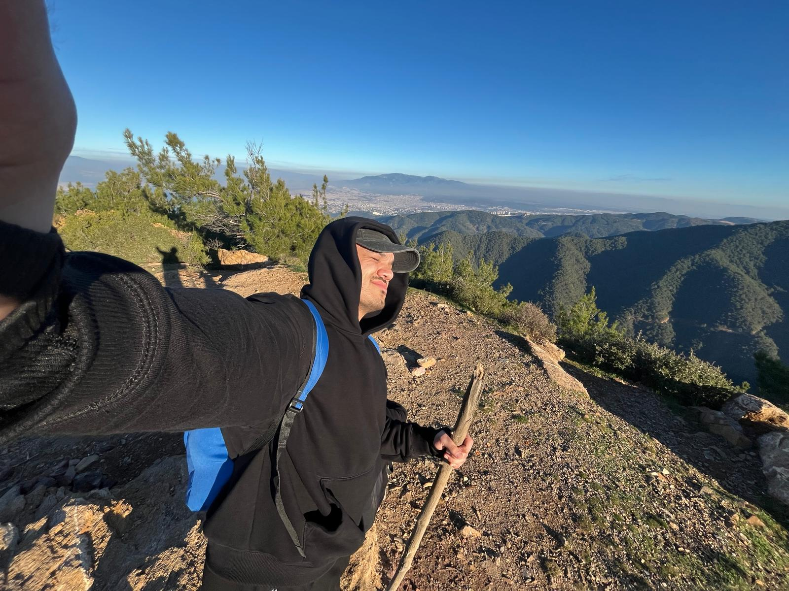

Merhaba! Ben Umut Ceyran, İzmir Bakırçay Üniversitesi Coğrafya Bölümü son sınıf öğrencisiyim. Mekansal verinin gücüne inanan, teknoloji ile coğrafyanın kesişiminde çalışan bir uzmanım.
Coğrafi Bilgi Sistemleri (CBS) ve uygulamalı mekansal analiz alanında kendimi geliştirdim. ArcGIS Pro, QGIS, ERDAS gibi profesyonel yazılımları yetkin şekilde kullanarak veri işleme, analiz, haritalama ve proje geliştirme süreçlerini yönetebiliyorum.
Ancak benim ilgimi çeken şey sadece klasik haritacılık değil. Mekansal verinin analiz gücünü artırmak, Python otomasyonları ve yapay zekâ entegrasyonunu merkeze alan akıllı CBS uygulamaları geliştirmek istiyorum. PostgreSQL/PostGIS ile mekansal veritabanları yönetiyorum ve Web ortamında harita uygulamaları oluşturuyorum.
Mekansal veriyi işleyerek, analiz ederek ve görselleştirerek geliştirdiğim çözüm odaklı projeler.
Esri Uluslararası Kullanıcı Konferansı'nda Story Maps kategorisinde 2. Ödül kazanan interaktif harita hikayesi. Mekansal veri görsel anlatı tekniğiyle birleştirildi.
GitHubPython ArcPy kütüphanesiyle tekrarlayan CBS süreçlerini otomatize eden araç seti. Manuel veri işleme süresini ciddi ölçüde azaltarak iş akışı verimliliğini artırdı.
GitHubSentinel-2 ve Landsat görüntüleriyle arazi örtüsü değişiminin zaman serisi analizi. NDVI, NDBI gibi spektral indeksler hesaplandı; kentsel yayılma ve yeşil alan kaybı haritalandı.
GitHubPostgreSQL/PostGIS ile büyük ölçekli coğrafi veriyi depolayan, sorgulayan ve analiz eden optimize mekansal veritabanı tasarımı. Spatial indeksler ve sorgular (ST_Contains, ST_Intersects) optimize edildi.
GitHubArcGIS Online ve HTML/CSS/JavaScript ile geliştirilen, tüm cihazlarda çalışan mobil uyumlu interaktif web harita uygulaması. Gerçek zamanlı veri filtreleme ve popup özellikleri eklendi.
GitHubScikit-learn ve GeoPandas ile mekansal veriyle eğitilen makine öğrenmesi modeli. Hotspot analizi ve kümeleme (K-Means, Random Forest) ile coğrafi tahminler üretildi, ArcGIS Pro'da görselleştirildi.
GitHubAkademik yolculuğum ve mesleki kilometre taşlarım.
İzmir Bakırçay Üniversitesi — Coğrafya Bölümü
Lisans eğitimimi 3.7/4.0 ortalamayla sürdürmekteyim. Mekansal analiz, CBS, uzaktan algılama ve kartografya alanlarında kapsamlı dersler aldım.
GIS Uzmanı Stajyeri — Çevre ve Orman Bakanlığı
Uydu görüntü analizi ve arazi örtüsü haritalama çalışmaları yürüttüm. Mekansal veri işleme, validasyonu ve web harita uygulamaları geliştirilmesine katkı sağladım.
CBS Tutor — İzmir Bakırçay Üniversitesi
Öğrencilere ArcGIS Pro ve QGIS eğitimi verdim. Mekansal analiz metodolojilerini pratik örneklerle öğrettim.
Esri Uluslararası Konferansı — Story Maps 2. Ödülü
Esri International User Conference'ta Story Maps kategorisinde uluslararası 2. ödülünü kazandım.
Birlikte çalıştığım araçlar ve teknolojiler.
Temel ve ileri seviye Python, veri yapıları ve algoritmalar.
ArcGIS Pro ile mekansal analiz, haritalama ve coğrafi veri işleme.
Üst-orta seviye İngilizce: konuşma, yazma ve dinleme.
Belge oluşturma, şablonlar ve profesyonel döküman hazırlama.
Formüller, veri analizi, pivot tablolar ve ileri hesaplamalar.
3D şehir modelleme, urban planning ve görselleştirme teknikleri.
Python GeoPandas ile coğrafi veri işleme, analiz ve görselleştirme.
HTML, CSS, JavaScript ile frontend ve backend geliştirme (devam ediyor).
İleri seviye veritabanı tasarımı, yönetimi, optimizasyon ve sorgulama.
2025 — Esri International User Conference, Story Maps kategorisi.
Yeni projeler, iş birlikleri veya tanışmak için bana ulaşabilirsiniz: